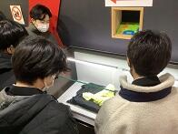
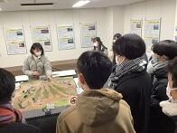
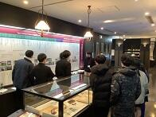
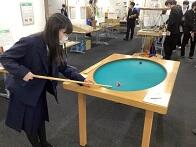
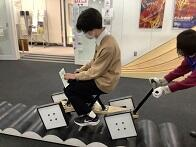
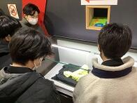
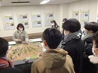
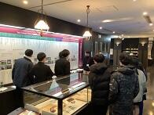
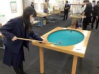
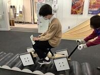

文字
背景
行間


SSH活動掲示板
 SSH箱根サイエンスツアー(2日目)
SSH箱根サイエンスツアー(2日目)
投稿日時 : 2023/01/06
 SSH担当
SSH担当
12月21日(水)～22日(木)の2日間、理数科2年次の生徒が参加するSSH箱根サイエンスツアーが行われました。
このサイエンスツアーは、今年度は中止となったSSH理数科海外研修の代替の活動として実施したものです。
東京～箱根方面の各施設で、専門家の方々の説明を聞き、それぞれの研究分野の最前線を体験することにより，
科学への興味関心を高めることが目的です。
2日目の午前は大涌谷と箱根ジオミュージアムに行きました。
悪天候により、大涌谷は視界が悪く見学しづらい状況だったので、
学芸員さんの解説を聴き、近場の見下ろせる範囲だけの観察だけしてジオミュージアムに戻りました。
ジオミュージアム内では箱根の火山の歴史や地形の成り立ちの解説を聴き、
硫黄の観察や箱根付近の地形のジオラマの観察を行いました(写真1,2)。
 
写真1 写真2 写真3
箱根から東京へ向かう途中で山伏峠展望台に寄り、中央火口丘や流れ出た溶岩がつくる地形を観察する予定でしたが、
悪天候により視界が悪く、何も観察が出来ない状態だったため、バスから降りることは断念しました。
2日目の午後は東京理科大学神楽坂キャンパスへ行き、2班に分かれ、
近代科学資料館の見学と数学体験館で体験活動を行いました。
近代科学資料館では、東京理科大学の創設から140年の沿革や近代の科学史年表、
江戸～明治時代の文献、エジソンの蓄音機などが展示されており、
解説を聴いた後、各々興味のある展示を見学しました(写真4)。
今年度の企画のノーベル生理学・医学賞を受賞した大村智先生の「大村智記念展示室」も見学することが出来ました。
数学体験館では、中学・高校の数学の授業で学ぶ内容を実験し、
五感で体験して納得することのできる教具・教材に触れることが出来ます。
この施設をつくったのは東京理科大学栄誉教授で数学者の秋山仁先生です。
事前学習で放物線や楕円の焦点について学んでいたので、
「パラボラアンテナ」や「楕円型ビリヤード」でボールが焦点に集まることを体感することが出来ました(写真5)。
また、理数科2年生は現在SS数学Ⅱの授業で数学B「確率分布と統計的な推測」の分野を学習しており、
「二項分布パチンコ」で二項分布の仕組みを理解することが出来ました。
他にも多数の教具がフロア中に置いてあり、生徒は時間いっぱい熱中して実験を行っていました(写真6)。
  
写真4 写真5 写真6
悪天候により、大涌谷は視界が悪く見学しづらい状況だったので、
学芸員さんの解説を聴き、近場の見下ろせる範囲だけの観察だけしてジオミュージアムに戻りました。
ジオミュージアム内では箱根の火山の歴史や地形の成り立ちの解説を聴き、
硫黄の観察や箱根付近の地形のジオラマの観察を行いました(写真1,2)。
 
写真1 写真2 写真3
箱根から東京へ向かう途中で山伏峠展望台に寄り、中央火口丘や流れ出た溶岩がつくる地形を観察する予定でしたが、
悪天候により視界が悪く、何も観察が出来ない状態だったため、バスから降りることは断念しました。
2日目の午後は東京理科大学神楽坂キャンパスへ行き、2班に分かれ、
近代科学資料館の見学と数学体験館で体験活動を行いました。
近代科学資料館では、東京理科大学の創設から140年の沿革や近代の科学史年表、
江戸～明治時代の文献、エジソンの蓄音機などが展示されており、
解説を聴いた後、各々興味のある展示を見学しました(写真4)。
今年度の企画のノーベル生理学・医学賞を受賞した大村智先生の「大村智記念展示室」も見学することが出来ました。
数学体験館では、中学・高校の数学の授業で学ぶ内容を実験し、
五感で体験して納得することのできる教具・教材に触れることが出来ます。
この施設をつくったのは東京理科大学栄誉教授で数学者の秋山仁先生です。
事前学習で放物線や楕円の焦点について学んでいたので、
「パラボラアンテナ」や「楕円型ビリヤード」でボールが焦点に集まることを体感することが出来ました(写真5)。
また、理数科2年生は現在SS数学Ⅱの授業で数学B「確率分布と統計的な推測」の分野を学習しており、
「二項分布パチンコ」で二項分布の仕組みを理解することが出来ました。
他にも多数の教具がフロア中に置いてあり、生徒は時間いっぱい熱中して実験を行っていました(写真6)。
  
写真4 写真5 写真6
箱根サイエンスツアー事前学習の様子は以下のリンクからご覧ください。
https://cms2.chiba-c.ed.jp/sakura-h/blogs/blog_entries/view/47/2886ef58c4d7555da4d8e73bef88daf5?frame_id=212
箱根サイエンスツアー(1日目)の様子は以下のリンクからご覧ください。
https://cms2.chiba-c.ed.jp/sakura-h/blogs/blog_entries/view/47/f08fd8feb0d3df4285a6b700479a879e?frame_id=212